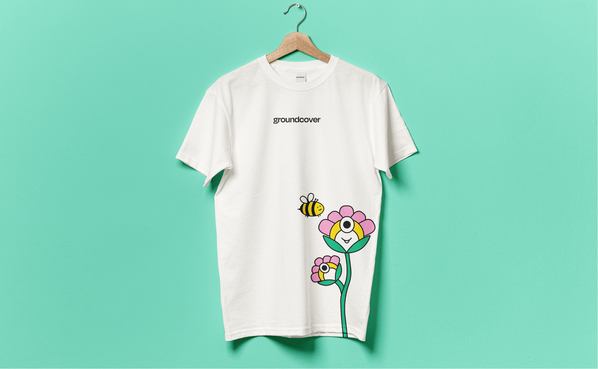
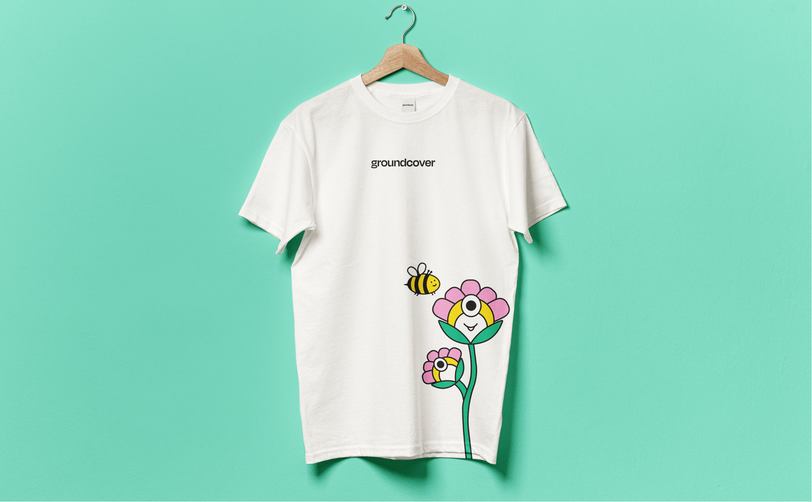

Client | Groundcover - A Kubernetes observability platform for DevOps teams. A 10-day brand sprint. By making a cutting-edge technology (called eBPF) more accessible - Groundcover is replacing traditional data collection mechanisms. They strive to be a leading standard for visibility and monitoring in a new eBPF world. By creating a colourful world of friendly creatures from the botanic world, we tried to express a human perspective, a sense of uniqueness, and innovation. Our goal was to create a warm, friendly, human, and empathic brand, so developers feel comfort, knowing we understand their pain and can troubleshoot effectively. Designer and Illustrator | Kate Holub Art Director | Eden Vidal


 
